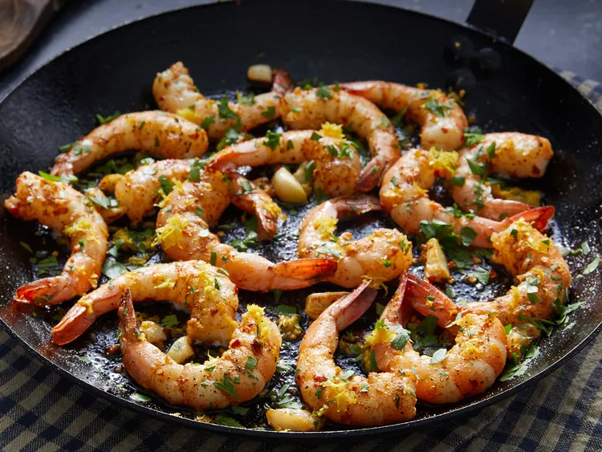

Lemon-Garlic Shrimp

Description
Lemon-garlic shrimp is a delicious appetizer that's perfect to throw together before a last-minute party. Or, serve this fresh, citrusy seafood over rice or pasta and make it a main dish on a busy weeknight when you're short on time.
Ingredients
- Large shrimp
- Onion
- Olive oil
- Salt and pepper
Steps
- Heat oil in a large skillet over medium-low heat until warm
- Cook and stir until shrimp are bright pink on the outside and the meat is opaque, 3 to 5 minutes.
- Reduce heat to low and stir in parsley, lemon juice, and lemon zest.